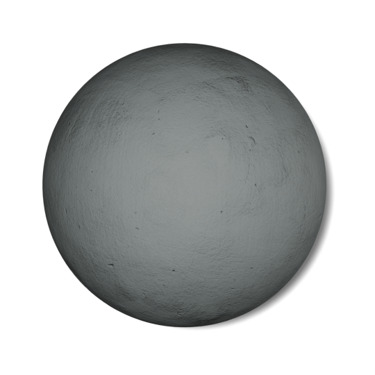
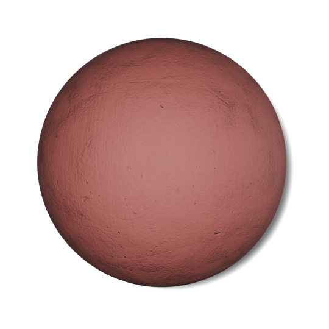
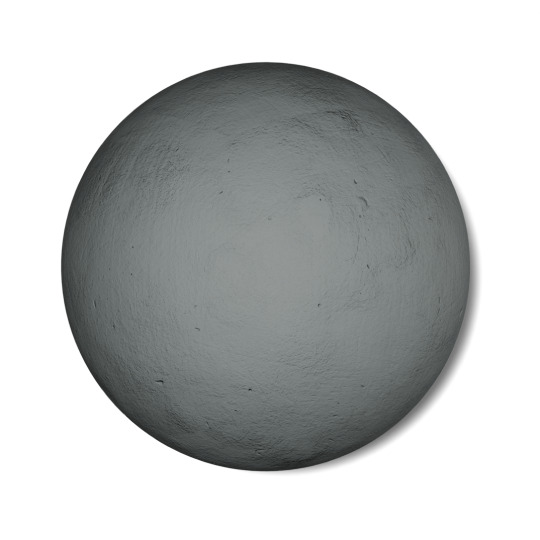
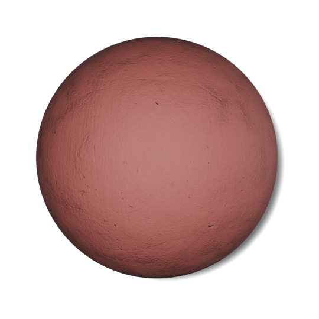

Полимербетон представляет собой быстротвердеющий ремонтный материал на основе метилметакриловой
смолы
и полимерных наполнителей, который состоит из двух компонентов, связующего (полимер) и
инициатора
полимеризации (отвердитель).
Основное назначение полимербетона — это ремонт сколов, выбоин, раковин, углублений, аэродромов,
неровных поверхностей, перепады высот, речных и морских портов, железнодорожных станций,
мостовых
переходов, путепроводов, автомобильных стоянок, пешеходных дорожек в т.ч. для применения в
различных
помещениях (производственных, бытовых) и других дефектов на цементобетонном покрытии в очень
короткие сроки (время ремонта 2,5 - 3 часа).
Полимербетон после полной полемиризации (около 2,5 - 3 часа при 20 °C) имеет прочность на сжатие
не
менее 35 МПа, на растяжение при изгибе — не менее 25 МПа, морозостойкость не менее 500
стандартных
циклов.
Для увеличения адгезии к поверхности старого бетонного покрытия — рекомендуем применять промоутер
адгезии (пропитку).

 




